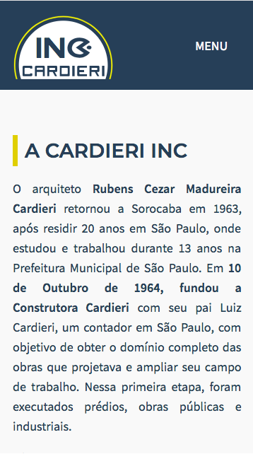
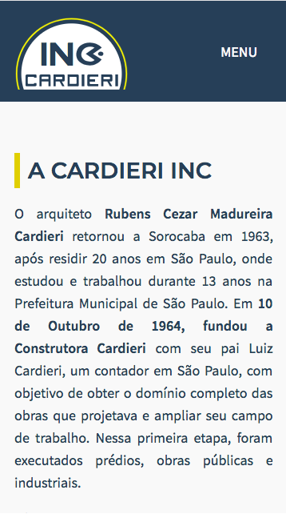

- March 2017
- February 2019 (expected)
- March 2016
- August 2016
- February 2012
- February 2016
- August 2013
- June 2014
- Março 2017
- Fevereiro 2019 (previsto)
- Março 2016
- Agosto 2016
- Fevereiro 2012
- Fevereiro 2016
- Agosto 2013
- Junho 2014
- March 2017 - February 2019 (expected)
- Federal University of São Carlos - Sorocaba-SP, Brazil
- Master of Science in Computer Science
- Focus on HCI and Software Engineering
- Capes research scholarship
- March 2016 - August 2016
- OTH Regensburg - Regensburg, Germany
- Bachelor of Science in Computer Science
- Exchange Student in full time internship (no courses taken)
- February 2012 - February 2016
- Universidade Estadual Paulista - Bauru-SP, Brazil
- Bachelor of Science in Computer Science - GPA: 7.7/10
- August 2013 - June 2014
- Rochester Institute of Technology - Rochester-NY, USA
- Bachelor of Science in Computer Science - GPA: 3.5/4
- Non-degree International Student
- Brazil Scientific Mobility Program, fully funded scholarship recipient
- Março 2017 - Fevereiro 2019 (previsto)
- Universidade Federal de São Carlos - Sorocaba-SP
- Mestrado em Ciência da Computação
- Foco em Interação Humano-Computador e Engenharia de Software
- Bolsista da Capes
- Março 2016 - Agosto 2016
- OTH Regensburg - Regensburg, Alemanha
- Bacharelado em Ciência da Computação
- Estudante de intercâmbio fazendo estágio
- Fevereiro 2012 - Fevereiro 2016
- Universidade Estadual Paulista - Bauru-SP
- Bacharelado em Ciência da Computação - CR: 7.7/10
- Agosto 2013 - Junho 2014
- Rochester Institute of Technology - Rochester-NY, EUA
- Bacharelado em Ciência da Computação - GPA: 3.5/4
- Estudante de intercâmbio
- Bolsista do Programa federal Ciência Sem Fronteiras
 
